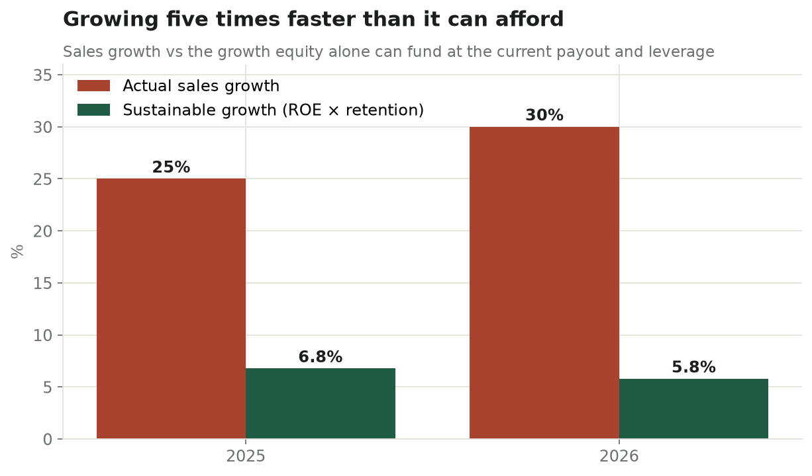
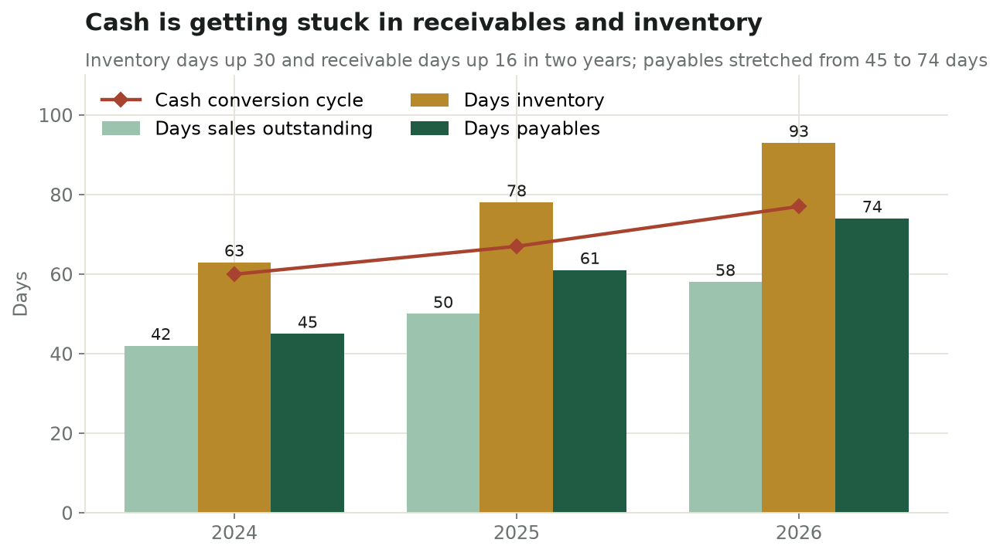
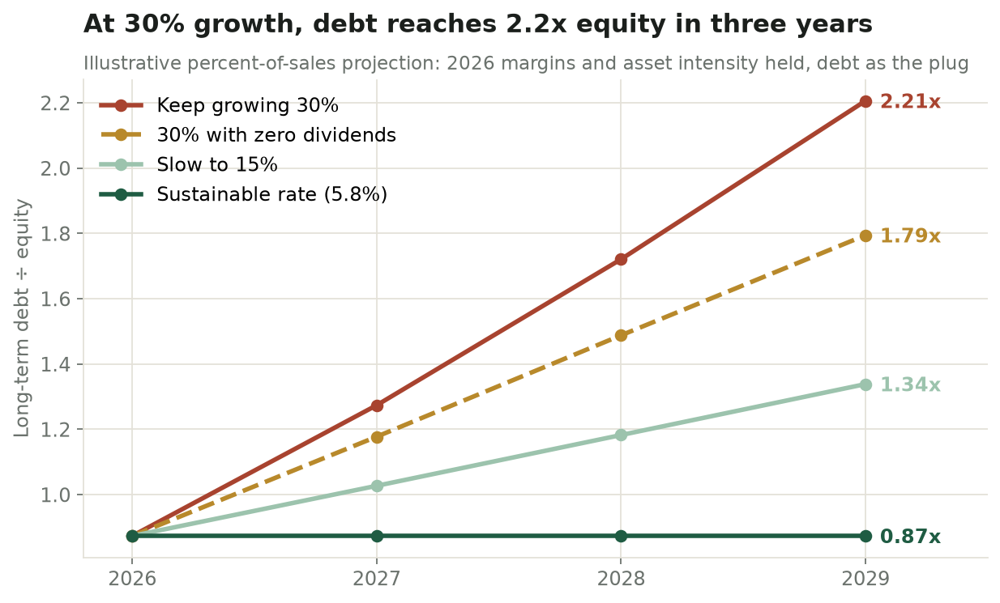

Mountain Mining: growing faster than it can afford
Sales are up 63% in two years. So why is cash down 71%, debt up 58% and net income falling? I diagnosed the company with ratio analysis, DuPont and Higgins' sustainable growth rate, then projected where its current path leads.
The diagnosis
Sustainable growth is return on equity times the share of profit retained: the fastest a company can grow without raising equity or adding leverage. Mountain Mining's ROE is 9.6% and it retains 60% of profit, which supports about 5.8% growth a year. It grew 30%.

- Growth is getting less profitable. Gross margin fell from 26.0% to 20.5% and net margin from 7.5% to 4.0%. Net income fell two years in a row.
- Cash is trapped in working capital. Inventory days rose from 63 to 93 and receivable days from 42 to 58. The company is pushing the strain onto suppliers, with payables stretched from 45 to 74 days.
- Debt fills the gap. The quick ratio fell below 1, debt to equity rose from 0.62 to 0.87 and interest coverage fell from 4.9x to 3.1x.

The supplier-discount decision
Suppliers offer 2/30 net 60. Skipping the 2% discount to pay on day 60 costs an effective 27.9% a year, against a 7% cost of debt. The forgone discounts were worth about $8,700, or 29% of net income. Borrowing to take the discount would have added roughly $4,700 to after-tax profit.
Where 30% growth leads
I projected the balance sheet forward, holding 2026 margins, asset intensity and payout constant, with debt as the plug. At 30% growth, debt reaches 2.2 times equity by 2029. Even cutting the dividend to zero only brings that down to 1.8x. Growing at the sustainable rate keeps leverage flat at 0.87x, which also confirms the model works as the theory predicts.

Recommendation
- Slow growth toward the sustainable rate until margins recover.
- Take the 2% supplier discount. It is the cheapest profit improvement available.
- Bring receivable and inventory days back toward 2024 levels to release cash.
- If fast growth is strategic, fund it with new equity rather than more debt.